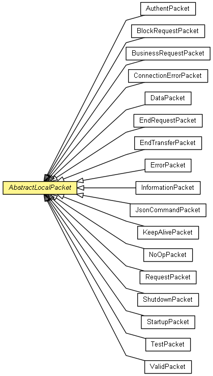

org.waarp.openr66.protocol.localhandler.packet
Class AbstractLocalPacket
java.lang.Object
 org.waarp.openr66.protocol.localhandler.packet.AbstractLocalPacket
org.waarp.openr66.protocol.localhandler.packet.AbstractLocalPacket
- Direct Known Subclasses:
- AuthentPacket, BlockRequestPacket, BusinessRequestPacket, ConnectionErrorPacket, DataPacket, EndRequestPacket, EndTransferPacket, ErrorPacket, InformationPacket, JsonCommandPacket, KeepAlivePacket, NoOpPacket, RequestPacket, ShutdownPacket, StartupPacket, TestPacket, ValidPacket
public abstract class AbstractLocalPacket
- extends Object

This class represents Abstract Packet with its header, middle and end parts. A Packet is composed
of one Header part, one Middle part (data), and one End part. Header: length field (4 bytes) =
Middle length field (4 bytes), End length field (4 bytes), type field (1 byte), ...
Middle: (Middle length field bytes)
End: (End length field bytes) = code status field (4 bytes), ...
- Author:
- frederic bregier
header
protected ChannelBuffer header
middle
protected ChannelBuffer middle
end
protected ChannelBuffer end
AbstractLocalPacket
public AbstractLocalPacket(ChannelBuffer header,
ChannelBuffer middle,
ChannelBuffer end)
AbstractLocalPacket
public AbstractLocalPacket()
createHeader
public abstract void createHeader(LocalChannelReference lcr)
throws OpenR66ProtocolPacketException
- Prepare the Header buffer
- Throws:
OpenR66ProtocolPacketException
createMiddle
public abstract void createMiddle(LocalChannelReference lcr)
throws OpenR66ProtocolPacketException
- Prepare the Middle buffer
- Throws:
OpenR66ProtocolPacketException
createEnd
public abstract void createEnd(LocalChannelReference lcr)
throws OpenR66ProtocolPacketException
- Prepare the End buffer
- Throws:
OpenR66ProtocolPacketException
getType
public abstract byte getType()
- Returns:
- the type of Packet
toString
public abstract String toString()
- Overrides:
toString in class Object
getLocalPacket
public ChannelBuffer getLocalPacket(LocalChannelReference lcr)
throws OpenR66ProtocolPacketException
- Parameters:
lcr - the LocalChannelReference in use
- Returns:
- the ChannelBuffer as LocalPacket
- Throws:
OpenR66ProtocolPacketException
Copyright © 2009-2013 Waarp. All Rights Reserved.